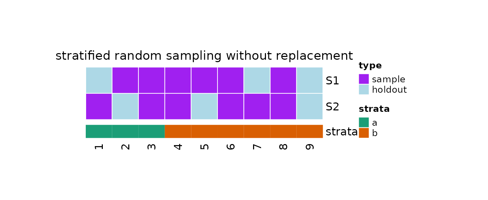

Introduction
resampling is an helpful package providing an easy way to take repeated samples (i.e. subsets of elements) from a population, here defined as a complete set of subjects of interest.
Resampling can be used for different purposes, including the estimation of the sampling distribution of an estimator, or the validation of predictive models in machine learning.
In this article, we show the main functions in
resampling and a quick example. For further information,
see:
Setup
Firstly, we need to load resampling and other needed R
packages:
#resampling
library(resampling)
#Packages for visualisation
require(ComplexHeatmap, quietly = TRUE)
require(grid, quietly = TRUE)
require(RColorBrewer, quietly = TRUE)Seed
Now we want to set a seed for the random number generation (RNG). In
fact, different R sessions have different seeds created from current
time and process ID by default, and consequently different simulation
results. By fixing a seed we ensure we will be able to reproduce the
results of this vignette. We can specify a seed by calling
?set.seed.
#Set a seed for RNG
set.seed(
#A seed
seed = 5381L, #a randomly chosen integer value
#The kind of RNG to use
kind = "Mersenne-Twister", #we make explicit the current R default value
#The kind of Normal generation
normal.kind = "Inversion" #we make explicit the current R default value
)Sampling Methods
A list of currently supported sampling methods is available through
the ?listAvailableSamplingMethods function call, which
returns a table with two columns:
-
id: the id of the sampling method, to be used in the function calls -
name: the name of the sampling method
#list sampling methods
sampling.methods = listAvailableSamplingMethods()
#print in table
knitr::kable(x = sampling.methods)| id | name |
|---|---|
| rswor | random sampling without replacement |
| srswor | simple random sampling without replacement |
| stratified_rswor | stratified random sampling without replacement |
| balanced_rswor | balanced random sampling without replacement |
| permutation | permutation sampling |
| kfolds | random k-fold sampling |
| stratified_kfolds | stratified k-fold sampling |
| balanced_kfolds | balanced k-fold sampling |
| leave_p_out | leave-p-out sampling |
| leave_one_out | leave-one-out sampling |
| rswr | random sampling with replacement |
| srswr | simple random sampling with replacement |
| stratified_rswr | stratified random sampling with replacement |
| balanced_rswr | balanced random sampling with replacement |
| bootstrap | ordinary bootstrap sampling |
Sampling Functions
The name of the sampling functions can be retrieved by calling
?listSamplingFunctionNames.
#list sampling function names
sampling.function.names = listSamplingFunctionNames()
#print in table
knitr::kable(x = sampling.function.names)| id | name |
|---|---|
| rswor | sampleWithoutReplacement |
| srswor | simpleRandomSampleWithoutReplacement |
| stratified_rswor | stratifiedSampleWithoutReplacement |
| balanced_rswor | balancedSampleWithoutReplacement |
| permutation | permutationSample |
| kfolds | randomKm1Folds |
| stratified_kfolds | stratifiedKm1Folds |
| balanced_kfolds | balancedKm1Folds |
| leave_p_out | leavePOutSample |
| leave_one_out | leaveOneOutSample |
| rswr | sampleWithReplacement |
| srswr | simpleRandomSampleWithReplacement |
| stratified_rswr | stratifiedSampleWithReplacement |
| balanced_rswr | balancedSampleWithReplacement |
| bootstrap | bootstrapSample |
Each function is documented. To learn more about a specific method it
is possible to use the ? operator. For example, let’s check
the function ?balancedSampleWithoutReplacement.
#See documentation
?balancedSampleWithoutReplacementFrom the documentation, we can see that the function accepts three arguments in input:
-
strata: a vector of stratification variables -
n: the sample size -
prob: an optional vector of probabilities for obtaining thestrataelements
Let’s draw a sample.
#Balanced sample without replacement
balancedSampleWithoutReplacement(
strata = c(rep("a", 3),rep("b", 6)),
n = 6
)
#> [1] 5 1 7 2 3 6Resampling Functions
The name of the resampling functions can be retrieved by calling
?listResamplingFunctionNames.
#list resampling function names
resampling.function.names = listResamplingFunctionNames()
#print in table
knitr::kable(x = resampling.function.names)| id | name |
|---|---|
| rswor | repeatedSampleWithoutReplacement |
| srswor | repeatedSimpleRandomSampleWithoutReplacement |
| stratified_rswor | repeatedStratifiedSampleWithoutReplacement |
| balanced_rswor | repeatedBalancedSampleWithoutReplacement |
| permutation | repeatedPermutationSample |
| kfolds | repeatedRandomKm1Folds |
| stratified_kfolds | repeatedStratifiedKm1Folds |
| balanced_kfolds | repeatedBalancedKm1Folds |
| leave_p_out | repeatedLeavePOutSample |
| leave_one_out | repeatedLeaveOneOutSample |
| rswr | repeatedSampleWithReplacement |
| srswr | repeatedSimpleRandomSampleWithReplacement |
| stratified_rswr | repeatedStratifiedSampleWithReplacement |
| balanced_rswr | repeatedBalancedSampleWithReplacement |
| bootstrap | repeatedBootstrapSample |
Each function is documented. To learn more about a specific method it
is possible to use the ? operator. For example, let’s check
the function
?repeatedStratifiedSampleWithoutReplacement.
#See documentation
?repeatedStratifiedSampleWithoutReplacementFrom the documentation, we can see that this function takes repeated
stratified samples without replacement from the population by repeatedly
calling the ?stratifiedSampleWithoutReplacement sampling
function. The ?stratifiedSampleWithoutReplacement help page
reports that the function implements the so-called “proportionate
allocation”, in which the proportion of the strata in the population is
maintained in the samples.
?repeatedStratifiedSampleWithoutReplacement accepts 4
arguments in input:
-
k: the number of repeated samples to generate -
strata: a vector of stratification variables -
n: the sample size -
prob: an optional vector of probabilities for obtaining thestrataelements
Let’s draw 3 samples.
#Stratified random samples
repeatedStratifiedSampleWithoutReplacement(
k = 3,
strata = c(rep("a", 3),rep("b", 6)),
n = 6
)
#> [[1]]
#> [1] 3 7 9 1 8 6
#>
#> [[2]]
#> [1] 4 7 5 2 9 1
#>
#> [[3]]
#> [1] 9 3 4 7 2 8We can double-check that the proportion of the strata in the population is maintained in the samples:
#Define strata
strata = c(rep("a", 3),rep("b", 6))
#Check ratio
table(strata)/length(strata)
#> strata
#> a b
#> 0.3333333 0.6666667
#Stratified random sample
i = repeatedStratifiedSampleWithoutReplacement(
k = 2,
strata = strata,
n = 3
)
#Check indices
i
#> [[1]]
#> [1] 5 3 4
#>
#> [[2]]
#> [1] 5 3 4
#Check ratio
table(strata[i[[1]]])/length(strata[i[[1]]])
#>
#> a b
#> 0.3333333 0.6666667
table(strata[i[[2]]])/length(strata[i[[2]]])
#>
#> a b
#> 0.3333333 0.6666667
resample Function
Instead of using the different resampling functions, we can use
?resample which provides a unique interface to the various
resampling methods. The parameters in input are:
-
x: either an integer representing the population size, or a vector of stratification variables -
n: either the sample size or the number of elements to holdout -
k: the number of repeated samples to generate. It is used as the number of folds in k-fold sampling -
method: one of the supported sampling techniques. See?listAvailableSamplingMethods -
prob: (optional) vector of probability weights for obtaining the elements from the population. If provided, its length must match the population size -
undersample: logical, whether to remove elements from the population in order to try to obtain balanced data
The function returns an object of class ?resampling,
which represents a series of samples repeatedly taken from a
population.
resampling S3 Class
The resampling class represents a series of samples
repeatedly taken from a population. A resampling object is
a list consisting of 4 elements:
-
method: the id of the used sampling method -
N: the size of the population from which the samples were taken. Elements in the population have index from 1 to N -
removed: (optional) vector of indices of elements removed from the population before taking the samples -
samples: list of samples repeatedly taken from the population. Each element of the list is an integer vector containing the indices of the elements sampled from the population
Functions to facilitate access to the data stored in a
resampling object are available:
-
?getSamplingMethodId: returns the sampling method id -
?getPopulationSize: returns the population size -
?getRemovedElements: returns the indices of elements removed from the population -
?getNumberOfSamples: returns the number of taken samples -
?getSamples: returns the list of samples -
?getSampleSize: returns a vector of integer values, the size of each sample -
?getHoldOutSample: returns a list where each item is an integer vector containing the indices of the elements not sampled from the population -
?getHoldOutSampleSize:returns a vector of integer values, the size of each hold-out sample
Two other useful functions are print and
plot:
-
?print.resampling: print a summary of theresamplingobject -
?plot.resampling: plot the samples taken from the population as an heatmap
Take Repeated Samples
Now let’s use the ?resample function to take repeated
samples from a population of 9 elements made of 2 groups (group
a and group b).
For this example, we want to use stratified sampling without
replacement. If we look at the table returned by
?listAvailableSamplingMethods, we can see that the
id for stratified sampling without replacement is
stratified_rswor. We can use this value as the
method argument in ?resample:
#Random sampling without replacement
obj = resample(
x = strata,
n = 6,
k = 2,
method = "stratified_rswor"
)We can check if the returned object is of class
resampling:
#Is obj of class `resampling`?
is.resampling(obj)
#> [1] TRUENow, we could print a summary:
#Print
print(obj)
#>
#> 2 samples taken from a population of 9 elements by using stratified
#> random sampling without replacement.
#>
#> sampleNumber sample sampleSize holdoutSize
#> 1 1 3, 5, 8, 2, ... 6 3
#> 2 2 1, 8, 4, 3, ... 6 3We can use ?getSamples to extract the taken samples from
the resampling object:
#Samples
getSamples(obj)
#> [[1]]
#> [1] 3 5 8 2 6 4
#>
#> [[2]]
#> [1] 1 8 4 3 7 6The holdout data can be obtained by using
?getHoldOutSamples:
#Holdout Data
getHoldOutSamples(obj)
#> [[1]]
#> [1] 1 7 9
#>
#> [[2]]
#> [1] 2 5 9We can also plot our object as an heatmap:
#Plot
plot(
x = obj,
strata = strata
)